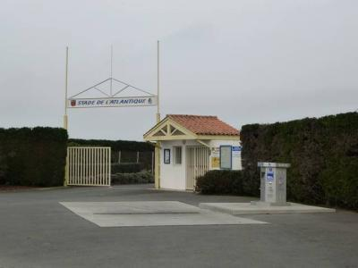
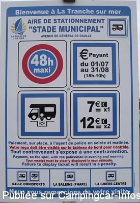
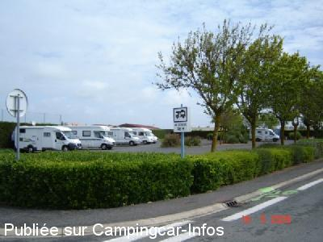

ASN = Aire de services avec stationnement nuit possible de :
LA TRANCHE SUR MER
(N° 302)
Accès/adresse :
Avenue du Général de Gaulle
Parking du Stade
85360 LA TRANCHE SUR MER
Parking du Stade
85360 LA TRANCHE SUR MER
Latitude : (Nord) 46.35028° Décimaux ou 46° 21′ 1′′
Longitude : (Ouest) -1.43688° Décimaux ou -1° 26′ 12′′
Tarif : 2015
Stationnement : 4,50 à 7,50 €
Services : 3,50 €
Type de borne : AIRESERVICES
Services :


Autres informations :
80 emplacements
Parking goudronné, sans ombre
Tél Office du Tourisme : +33(0)251 303 396
http://www.latranchesurmer-tourisme.fr/hebergements/camping-cars/

Le 18/11/2012 par Papapi AC

Le 31/07/2012 par Loulou 37 - jhph72

Le 19/10/2010 par PC
de
MATHE
le 13/04/2015 :
§ bonsoir a tous, nous somme passe le 11/04/2015 en basse saison maintenant il est payant se parking,le tarif est de 4.50euros la nuit.stationnée prés de la route c est bruyant avec les voiture qui ralentisse a cause d un ralentisseur.
§ bonsoir a tous, nous somme passe le 11/04/2015 en basse saison maintenant il est payant se parking,le tarif est de 4.50euros la nuit.stationnée prés de la route c est bruyant avec les voiture qui ralentisse a cause d un ralentisseur.
de
lepulch
le 10/08/2014 :
de passage le 28 juillet nous avons du nous rabattre sur ce parking a coté du stade payant 10 euro la nuit. a le mérite d'exister,mais cher pour ce que c'est
de passage le 28 juillet nous avons du nous rabattre sur ce parking a coté du stade payant 10 euro la nuit. a le mérite d'exister,mais cher pour ce que c'est
de
cricri76
le 24/09/2012 :
Bonjour à tous les camping-caristes, nous y avons séjourné 2 nuits les 19 & 20 septembre nous voulons compléter les informations de cette aire. Une borne de services Aire-Service est présente juste avant l'entrée du stade, accès facile. Les vidanges eaux grises et WC sont gratuites (pas d'eau de rinçage pour le réservoir des toilettes). Le plein d'eau peut être fait pour 3,5 € par carte bancaire. Pas d'électricité.
Bonjour à tous les camping-caristes, nous y avons séjourné 2 nuits les 19 & 20 septembre nous voulons compléter les informations de cette aire. Une borne de services Aire-Service est présente juste avant l'entrée du stade, accès facile. Les vidanges eaux grises et WC sont gratuites (pas d'eau de rinçage pour le réservoir des toilettes). Le plein d'eau peut être fait pour 3,5 € par carte bancaire. Pas d'électricité.
de
pierre
le 02/10/2011 :
Présents la nuit du 27-09-11 sur ce lieu, je confirme qu'il n'est pas de tout repos vu qu'il jouxte l'Avenue Général de Gaulle. Par contre je signale qu'il ne s'agit plus d'un parking mais d'une aire de service avec borne dont je n'ai pas relevé le type ni le tarif.
Présents la nuit du 27-09-11 sur ce lieu, je confirme qu'il n'est pas de tout repos vu qu'il jouxte l'Avenue Général de Gaulle. Par contre je signale qu'il ne s'agit plus d'un parking mais d'une aire de service avec borne dont je n'ai pas relevé le type ni le tarif.
de
nani
le 20/07/2010 :
Nous y avons dormis 2 nuits début juillet. Dèsormais le parking est payant du 1/07 au 31/08. 7€ la nuit ou 12€ les 2 nuits avec paiement auprès d'un agent le soir ou le matin #### (un peu tôt !). Sinon parking bien placé mais assez bruyant (route de passage juste à côté), proche du centre commercial, des plages (5 min à vélo) et du centre ville (10 min à vélo). Gros plus, pour les enfants, le parc de roller et skate en bout de parking. §
Nous y avons dormis 2 nuits début juillet. Dèsormais le parking est payant du 1/07 au 31/08. 7€ la nuit ou 12€ les 2 nuits avec paiement auprès d'un agent le soir ou le matin #### (un peu tôt !). Sinon parking bien placé mais assez bruyant (route de passage juste à côté), proche du centre commercial, des plages (5 min à vélo) et du centre ville (10 min à vélo). Gros plus, pour les enfants, le parc de roller et skate en bout de parking. §
de
Fredolabricole
le 02/06/2009 :
On n'y a pas passé la nuit pour la Pentecôte car le parking était plein, mais il me semble pas trop mal situé, proche du centre commercial et relativement proche du centre ville à vélo par les pistes cyclables. En ce qui concerne le plein soleil, je pense que les arbres feront effet car il y en a ;)
Nous avons donc passé la nuit sur le parking du centre commercial, aucun problème et la nuit fut très calme.
On n'y a pas passé la nuit pour la Pentecôte car le parking était plein, mais il me semble pas trop mal situé, proche du centre commercial et relativement proche du centre ville à vélo par les pistes cyclables. En ce qui concerne le plein soleil, je pense que les arbres feront effet car il y en a ;)
Nous avons donc passé la nuit sur le parking du centre commercial, aucun problème et la nuit fut très calme.
de
mach709
le 22/09/2008 :
Eloigné des plages, en plein soleil et relativement bruyant la journée, il est cependant vaste et goudronné.
Eloigné des plages, en plein soleil et relativement bruyant la journée, il est cependant vaste et goudronné.